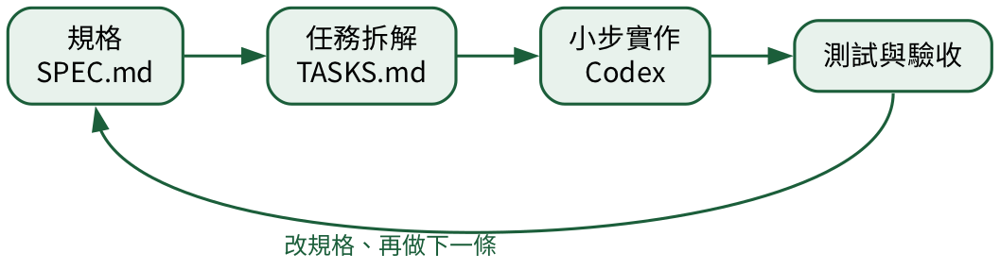
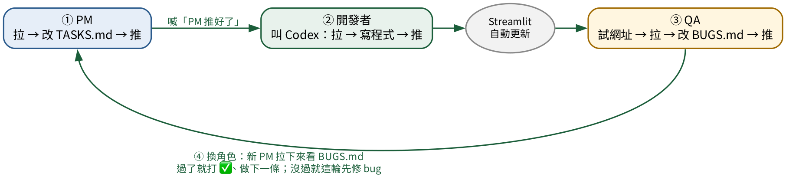

Vibe Coding 第 2 週：照規格，用 Codex 重做一次
SPEC → TASKS → 小步實作 → 驗收 · GitHub 協作
目錄
1. 一、回顧與 SPEC 修訂
1.1. 上週我們學到的四步循環

上週的 ChatGPT 版，我們是「想到什麼就叫 AI 做什麼」。 這週同一個題目——班級飲料團購統計 App—— 照這四步重做一次，最後比較兩個版本。
1.2. SPEC 點評：這條驗收條件 AI 看得懂嗎？
拿一份 SPEC.md 來看，每條驗收條件問三個問題：
- 照著做得出來嗎？ 有沒有寫「按哪裡、輸入什麼」？
- 判斷得了嗎？ 做完能不能明確說「過」或「不過」？
- AI 會不會誤會？ 換一個完全不認識你們的人來讀，會做出一樣的東西嗎？
| 原本寫的 | 問題 | 改成 |
|---|---|---|
| 要能記錄訂單 | 記錄哪些欄位？ | 填姓名、飲料、甜度、冰塊、金額後按送出，表格多一筆 |
| 統計正確 | 怎樣算正確？ | 新增 3 筆 50 元，總杯數顯示 3、總金額顯示 150 |
| 資料不會不見 | 什麼情況不見？ | 重新整理頁面後，剛剛的訂單都還在 |
| 介面友善 | 無法判斷 | （刪掉，或改成具體的：「手機直向不用左右捲動」） |
1.3. 各組修訂（5 分鐘）
PM 在 GitHub 網頁上打開 SPEC.md → 鉛筆 ✏️ 直接改 → Commit changes。
- 必要功能超過 4 項？砍到 4 項。
- 驗收條件裡還有「能用」「正確」「友善」？改成可操作、可判斷的句子。
- 「畫面與資料」寫了資料存在哪、其他人看不看得到嗎？ 沒想好的話，最簡單的做法是： 由一個人負責收單，最後按「匯出 CSV」， 並把「多人同時線上填單」寫進不做清單。
- 定位還是「班級自己用、一次一團、一家店」嗎？店家端的功能放進不做清單。
- 不做清單至少 3 條。
2. 二、這週的分工
2.1. 三個角色，各管各的檔案
上週暖身已經分過角色、跑過一次接力；這週照同樣的分工， 每輪輪換。 每個人都在自己的電腦上做事，透過 GitHub 交接。 每個角色只改自己負責的檔案，改完自己推上去：
| 角色 | 做什麼 | 負責的檔案 | 怎麼推 | 不能做的事 |
|---|---|---|---|---|
| PM | 決定這輪做哪一條、把驗收條件寫清楚 | TASKS.md、 SPEC.md |
自己打指令 | 不能寫程式、不能指揮 Codex |
| 開發者 | 唯一指揮 Codex 的人：下任務、讀回報 | app.py 等程式、 AGENTS.md |
叫 Codex 推 | 不能自己決定做什麼、不改其他 .md |
| QA | 打開網址照驗收條件試，再亂試三種；記錄結果 | BUGS.md |
自己打指令 | 不能看程式碼、不能改程式 |
目的是讓每個人都體會到： 寫程式已經不是瓶頸，想清楚和驗收才是。
2.2. 人數不同怎麼分
| 組員數 | 怎麼分 | 每輪誰推什麼 |
|---|---|---|
| 3 人 | 一人一角，每輪輪換 | PM 推 TASKS.md → 開發者推程式 → QA 推 BUGS.md |
| 2 人 | 一人兼 PM＋QA，另一人當開發者；每輪互換 | 同上，PM＋QA 那位推兩次 |
| 1 人 | 自己兼 PM＋開發者， QA 由夥伴組的人擔任 | 你推 TASKS.md 和程式 → 夥伴推 BUGS.md 進你的 repo |
1 人組的提醒：
- 老師會把 1 人組和其他小組配成「夥伴組」，互相當對方的 QA。組長邀請時，記得把夥伴也加成 Collaborator。
- 一個人也要守規矩：先當 PM 改好 TASKS.md 推上去，再換開發者的帽子叫 Codex 做； 推上去之後， 不准自己驗收，等夥伴來試。
為什麼 QA 一定要是別人？因為上週互打 App 已經看到了： 自己覺得做完了，別人一用就發現你沒想到的地方。
3. 三、GitHub 協作：回到上週的 repo
3.1. 重新登入、拉最新版（約 5 分鐘）
repo、邀請上週暖身都做過了。這週每個人只要：
1. 重新登入（單獨執行這一行，等它說登入成功）
gh auth login
看最後一行 Logged in as ... 是不是你自己的帳號；不是的話，
到瀏覽器把 GitHub 登出 → gh auth logout → 重新登入。
2. 拿到最新版
桌面上 還有 上週的資料夾：
cd ~/Desktop/c1-g3-drink # 換成你們上週的資料夾名字 git pull # 拿到 PM 回家改好的 SPEC.md- 資料夾 不見了（學校電腦會清桌面，或你換了座位）：照第 1 週的步驟 5、6 重新 clone、設定
git config。
3. 用 PyCharm 打開專案： Open → 選你們的資料夾 → 跳出「Trust and Open Project?」按 Trust Project。 之後看檔案、改檔案都在 PyCharm，指令在 PyCharm 下方的 Terminal 打。
- 確認一下：資料夾裡的
SPEC.md是團購規格，不是暖身規格。
3.2. PM、QA：自己動手的四步
PM 和 QA 只改 .md 檔，不用 Codex，自己來。跟上週暖身一樣： 檔案在 PyCharm 改，git 指令在 PyCharm 的 Terminal 打。
先拉最新版（Terminal）
git pull- 在 PyCharm 改檔案：左邊點
TASKS.md（QA 點BUGS.md）直接改，PyCharm 會自動存檔。 右上角可以切換 Markdown 預覽。 存檔點（Terminal）
git add TASKS.md # QA 換成 BUGS.md git commit -m "PM：這輪做 T3" # 引號裡寫你做了什麼推上去（Terminal）
git push
不確定改了什麼？ git status 會列出哪些檔案動過。
3.3. 選用：連 git 也用 PyCharm 的按鈕
不想打 git 指令的 PM、QA，可以用 PyCharm 的選單做同樣的事（可以和指令混著用）：
| 動作 | Terminal 指令 | PyCharm 按鈕 |
|---|---|---|
| 拉最新版 | git pull |
左上角專案名旁的 Git 選單 → Update Project（ ⌘T） |
| 存檔點＋推 | git add／commit／push |
⌘K → 只勾你的檔案、寫訊息 → Commit and Push |
| 看歷史 | git log |
⌘9 開 Git 視窗 → Log |
- Commit 視窗 只勾你負責的檔案（PM 勾 TASKS.md，QA 勾 BUGS.md），不要勾
.idea之類的東西。 - 登入 GitHub 一樣靠
gh auth login；作者一樣靠第 1 週步驟 6 的git config。
3.4. 開發者：交給 Codex 的四句話
開發者在 PyCharm 的 Terminal 輸入 codex 啟動，git 的事都請 Codex 代勞：
| 你想做的事 | 對 Codex 說 |
|---|---|
| 開工前，拿組員的新版 | 「先 git pull」 |
| 做完一條任務，送上去 | 「commit，訊息寫『T3 完成』，然後 push」 |
| 看看大家改了什麼 | 「用 git log 列出最近五個 commit，誰做的、改了什麼」 |
| 改壞了，想回到上一版 | 「還沒 commit 的修改全部丟掉，回到上一個 commit」 |
Codex 要執行 git 指令前會先問你同意—— 看一眼它要跑什麼再按同意。 你會發現它跑的，就是 PM、QA 自己打的那幾行。
3.5. 不打架：接力棒規則
兩個人同時改同一個檔案，git 會「打架」（衝突，conflict）。用三條規則避開：
- 每個檔案只有一個主人（見第二章的表），不碰別人的檔案。
- 接力棒：同一時間只有一個人在推。推好了要 喊出來（「PM 推好了！」），下一位才動手。
- 動手前一定先拉。沒拉就改，等於在舊版本上改。
真的打架了？開發者跟 Codex 說「git pull 時有衝突（conflict），先告訴我兩邊差在哪，再幫我解決」； PM、QA 遇到就找開發者或老師。
4. 四、開工前：立班規、拆任務（三個人各推一次）
4.1. ① 開發者：建班規、拆任務，推上去
在 Codex 裡：
- 「先 git pull。」SPEC.md 已經是 PM 改好的團購規格；
app.py是上週暖身做的點單畫面， 留著當起點，之後照 TASKS.md 一條一條加。 - 請 Codex 建立
AGENTS.md（內容見下一頁）。 - 請 Codex 拆任務：
讀 SPEC.md 和 app.py（上週已做好點單畫面），把還沒做的必要功能拆成 5～8 條任務，寫進 TASKS.md。 每條任務用下面的格式，編號 T1、T2……，按照先後順序排列。不要開始寫程式。 ## T1 任務名稱（一句話） - 驗收條件：…… - 狀態：待做
- 「commit，訊息寫『班規、任務清單』，然後 push」→ 喊「開發者推好了」。
4.2. AGENTS.md：Codex 的班規
Codex 每次啟動都會自動讀專案資料夾裡的 AGENTS.md：
# 班規
- 一律用繁體中文回答，用高中生聽得懂的話
- 動手前先讀 SPEC.md，只做 TASKS.md 裡「狀態：▶ 這輪做」的那一條
- 一次只改一件事，改完告訴我改了哪些檔案、為什麼
- SPEC.md 第 5 欄「不做清單」列的功能，就算你覺得有用也不要做；想加功能先問我
- 主程式放在 app.py；計算總杯數、總金額的部分寫成獨立的函式
- 除了 streamlit，不安裝任何套件，除非我同意；需要的套件寫進 requirements.txt
- 菜單和價格放在 menu.json，程式從檔案讀，不要寫死在 app.py 裡
- 密碼一律放 st.secrets，不寫進程式或任何會推上 GitHub 的檔案；不做帳號登入系統
- 不要建立虛擬環境（venv），直接用系統的 python3；在本機試跑一律用 python3 -m streamlit run app.py
- 建立 .gitignore，排除 .idea/、.venv/、__pycache__/、.DS_Store
- 我說 commit 才 commit，我說 push 才 push；commit 訊息用繁體中文
- 不要修改 SPEC.md、TASKS.md、BUGS.md（那是 PM 和 QA 的檔案）
概念：AGENTS.md 是「每次 AI 犯錯，就加一條規則」的地方。今天結束前，班規應該會長出新的幾條。
為什麼要寫 python3 -m streamlit？學校電腦的 streamlit 裝在 student 帳號裡，
直接打 streamlit 可能會「找不到指令」，透過 python3 -m 一定找得到。
（在家裡自己的電腦：通常要先建 venv，再 pip install -r requirements.txt，見附錄。）
為什麼密碼要放 st.secrets？repo 是 Public， 寫在程式裡的密碼全世界都看得到。
要做「團主密碼」（例如輸入密碼才看得到「關閉收單」）的組：
到 Streamlit 的 Manage app → Settings → Secrets 填一行 團主密碼 = "xxxx"，
程式用 st.secrets["團主密碼"] 讀。這不是帳號系統，只是「知道密碼的人看得到團主按鈕」。
4.3. ② PM：審任務清單，推上去
git pull，在 PyCharm 點開 TASKS.md，全組一起看：- 順序對嗎？點單畫面上週做好了，T1 應該是「送出後記下這筆、列在表格裡」，不是「匯出 CSV」。
- 有沒有一條其實是三條？一條任務的標準： 10 分鐘內做得完、QA 驗得了。
- 自己動手改（拆開、調順序、把驗收條件寫清楚），再把 T1 的狀態改成
▶ 這輪做。 git add TASKS.md→git commit -m "PM：審任務，這輪做 T1"→git push→ 喊「PM 推好了」。
4.4. ③ QA：建 BUGS.md，推上去
git pull，確認資料夾裡有 SPEC.md、AGENTS.md、TASKS.md。在 PyCharm 點開
BUGS.md，把上週暖身的紀錄刪掉，只留第一行：# 驗收紀錄git add BUGS.md→git commit -m "QA：清空驗收紀錄"→git push→ 喊「QA 推好了」。
三個人都推過一次了——跟上週暖身一樣： 改自己的檔案、推上去、下一位拉下來。
5. 五、小步實作循環
5.1. 每一輪的流程（約 12 分鐘）

5.2. 每一步誰做什麼
| 步驟 | 誰 | 做什麼 |
|---|---|---|
| ① | PM | git pull；看 BUGS.md：上一條過了就把狀態改成 ✅ 完成，下一條改成 ▶ 這輪做； |
沒過就把那一條改成 ▶ 這輪做（修 B1）。存檔、 git add/commit/push，喊「PM 推好了」 |
||
| ② | 開發者 | 對 Codex：「先 git pull」→「讀 SPEC.md 和 AGENTS.md，完成 TASKS.md 裡『▶ 這輪做』的那一條」 |
| 讀 Codex 的回報， 用自己的話 跟組員說它改了什麼 | ||
| 對 Codex：「commit，訊息寫『T3 完成』，然後 push」，喊「開發者推好了」 | ||
| ③ | QA | 等網站更新（約 1 分鐘），照驗收條件試，再亂試三種 |
git pull，在 BUGS.md 寫下結果（通過或 bug），存檔、 git add/commit/push，喊「QA 推好了」 |
||
| ④ | 全組 | 換角色（PM→開發者→QA→PM），從 ① 開始 |
5.3. TASKS.md 長這樣（PM 只改「狀態」那一行）
## T1 畫面：標題＋點單表單
- 驗收條件：打開網址看得到姓名、飲料、甜度、冰塊、金額欄位和「送出」按鈕
- 狀態：✅ 完成
## T2 送出後表格多一筆
- 驗收條件：填好按送出，下方表格多一筆，欄位內容正確
- 狀態：▶ 這輪做
## T3 統計總杯數、總金額
- 驗收條件：新增 3 筆 50 元，顯示總杯數 3、總金額 150
- 狀態：待做
5.4. BUGS.md 怎麼寫（QA）
# 驗收紀錄
## T1：通過
## T2：沒過 → B1
- 我做了什麼：金額填 -50，按送出
- 我預期：跳出提示，不新增訂單
- 實際發生：新增成功，總金額變少 50 元
下一輪的 PM 看到 B1，就把 T2 改成 ▶ 這輪做（修 B1）；
開發者跟 Codex 說：「先 git pull，修正 BUGS.md 的 B1」。
（1 人組：你的 QA 夥伴用一樣的方式，把 BUGS.md 推進你的 repo。）
5.5. 第 1 輪多做一件事：部署到 Streamlit
T1 推上去之後，由 組長 部署一次，之後每次推上去網站都會自動更新：
- 打開 share.streamlit.io（用上週那個帳號登入）→ Create app。
- 選 Deploy a public app from GitHub，Repository 選
drink-app-v2， Main file path 填app.py。 - App URL 取一個好認的名字，例如
drink-v2-group3→ Deploy。 - 把網址貼在組內，QA 從此只看這個網址。
上週的 ChatGPT 版網址 不要刪，最後要拿來比較。
6. 六、交叉驗收（12 分鐘）
6.1. 規則
兩組互測（老師配對），只拿對方的 SPEC.md 和 App 網址：
- 只看規格，照對方的驗收條件一條一條試。
- 不看程式碼，不問對方「這個要怎麼用」——照規格做不出來，就是 規格的問題。
6.2. 流程
| 步驟 | 時間 | 做什麼 |
|---|---|---|
| 1. 交換網址 | 1 分鐘 | 給對方兩個網址： GitHub repo（在網頁上讀 SPEC.md，不用 clone）＋ Streamlit 網址 |
| 2. 驗收 | 7 分鐘 | 照對方的驗收條件一條一條試，填驗收表；再跑 QA 題庫四題 |
| 3. 回饋 | 2 分鐘 | 兩組面對面，各說一條「失敗」（給開發者）、一條「規格寫不清楚」（給 PM） |
| 4. 收尾再推一次 | 2 分鐘 | 被測組的 QA、PM 把對方的回饋寫進自己的檔案，推上去 |
6.3. 驗收時組內怎麼分
| 工作 | 做什麼 |
|---|---|
| 唸規格 | 在 GitHub 網頁打開對方的 SPEC.md，一條一條唸出驗收條件 |
| 操作 | 只照唸出來的內容 操作對方的 App |
| 記錄 | 在驗收表勾「通過／失敗／規格寫不清楚」，失敗的寫下實際發生什麼 |
2 人組：一人唸＋記錄、一人操作。1 人組：自己操作、自己記錄。
驗收條件試完，再跑上週 QA 題庫的 A1～A6， 以及 對方 SPEC 有寫要做 的 B 題（SPEC 沒寫的 B 題，沒做到不算錯）。
6.4. 驗收表
受測組：＿＿＿＿ 驗收組：＿＿＿＿
| # | 驗收條件（抄對方 SPEC） | 通過 | 失敗 | 規格寫不清楚 | 實際發生什麼 |
|---|---|---|---|---|---|
| 1 | |||||
| 2 | |||||
| 3 | |||||
| 4 | |||||
| 5 | |||||
| 6 | |||||
| 題庫 | A1～A6＋SPEC 有寫的 B 題 |
「規格寫不清楚」是給 PM 的回饋，不是給程式的。
6.5. 收尾：把回饋推進自己的 repo
聽完對方的回饋，被測組（你們自己）：
QA：把對方抓到的失敗抄進
BUGS.md，標上來源，然後推上去：## B5（交叉驗收，第 4 組抓到） - 我做了什麼：…… - 我預期：…… - 實際發生：……- PM：把「規格寫不清楚」的那條驗收條件改清楚，推上去。
這些 bug 課堂上來不及修，留作回家作業，也是下一段「兩個版本差在哪」的討論素材。
7. 七、回顧：兩個版本差在哪
7.1. 回到 Padlet
打開 Padlet 最右邊新的一欄「🔁 Codex 版還有這個問題嗎？」，各組貼一張：
- 上週 🧋、❓ 欄那些問題，這週還有嗎？（只算你們 SPEC 寫了要做的）
- 如果還有，是哪一步沒做好？（規格沒寫？驗收沒試？）
7.2. 三個問題（每組 1 分鐘）
- 跟上週的 ChatGPT 版相比，這次哪裡不一樣？
- Codex 犯過什麼錯？你們加了哪一條班規？
- 壞掉的時候，這次知不知道要退回哪裡？
7.3. 帶走一句話
你的價值從「寫程式」，移到了「說清楚、拆小、驗收」。
這套流程也是專題企劃書、科展計畫書的骨架：給誰用、做什麼、不做什麼、怎樣算成功。
8. 八、繳交
每組填 Google 表單（老師另發）：
| 項目 | 說明 |
|---|---|
| GitHub repo 網址 | drink-app-v2，要看得到每個人的存檔點 |
| Streamlit 網址（Codex 版） | 能打開、能用 |
| 交叉驗收表 | 拍照或截圖 |
| 個人反思（每人） | 兩個版本差在哪？你當三種角色時各有什麼體會？ |
下課前： 學校電腦是大家共用的，不登出的話，下一位同學就能用你的帳號推東西。
gh auth logout # 登出 GitHub
codex logout # 如果你是用自己的 ChatGPT 帳號登入 Codex
瀏覽器裡的 GitHub（和 ChatGPT）也要登出，不然下一位 gh auth login 會直接登入成你。
9. 附錄：GitHub 急救
| 狀況 | 解法 |
|---|---|
push 被拒絕（ rejected、 fetch first） |
有人先推了：先 git pull 再 git push |
git pull 時出現衝突（ CONFLICT） |
叫 Codex 先說明兩邊差在哪，再幫你解決；看不懂就找老師 |
Permission denied、 403 |
還沒接受邀請，或還沒 gh auth login；確認組長有加你當 Collaborator |
gh: command not found |
這台還沒裝 gh：請老師在 LabCtl 對這台跑 36 號範本 |
| push 時終端機要你輸入 Username／Password | 沒用 gh 登入：按 Ctrl-C，先跑 gh auth login（選 Yes 讓 git 用 GitHub 帳號） |
GitHub 上存檔點的作者顯示 student |
忘了第 1 週步驟 6：在專案資料夾設 git config user.name／user.email，之後的存檔點就對了 |
fatal: destination path ... already exists |
這個資料夾名字別人用過了：clone 時換一個名字（加班級組別） |
| 一打開就是上一位同學的 GitHub／Codex 帳號 | 上一位沒登出：先 gh auth logout、 codex logout，再用自己的帳號登入 |
clone 時說 Repository not found |
網址打錯、或 repo 是 Private 而你還沒被邀請 |
| 推上去了，Streamlit 網站沒變 | 等 1～2 分鐘；還是沒變，到 Streamlit 的 Manage app 看紅字 |
Streamlit 出現 ModuleNotFoundError |
缺 requirements.txt：叫 Codex 補上並推上去 |
本機跑 App 時 streamlit: command not found |
改用 python3 -m streamlit run app.py |
error: externally-managed-environment |
想用 pip 裝套件被擋：在學校不要自己裝，告訴老師；在家用 venv（見下方） |
| PyCharm 跳出「建立虛擬環境」 | 按取消就好；學校電腦已裝好 streamlit，用 python3 -m streamlit run app.py 跑 |
Commit 視窗出現一堆 .idea、 .venv 檔案 |
不要勾；叫開發者請 Codex 補 .gitignore |
| 改壞了 | 對 Codex：「還沒 commit 的修改全部丟掉，回到上一個 commit」 |
| Codex 說額度用完（usage limit） | 換人登入接力，見下方「Codex 額度用完：換人接力」 |
9.1. Codex 額度用完：換人接力
進度存在 檔案和 git 裡，不在 Codex 的對話裡——換一個人登入，讀完 SPEC.md、TASKS.md、AGENTS.md 就能接著做。
1. 先處理改到一半的程式（額度用完，Codex 不能幫你跑 git，自己打）
git status # 看 Codex 改了哪些檔案
改得差不多了 → 自己存檔推上去：
git add app.py git commit -m "T3 做到一半（額度用完，換人接）" git push- 改壞了、看不懂改了什麼 → 丟掉，回到上一個存檔點：
git restore .
2. 換人登入（二選一）
- 同一台電腦：
codex logout→codex login，用另一位組員的 ChatGPT 帳號在瀏覽器登入。 - 換到另一位組員的電腦：那台先
git pull，再啟動codex。順便換人當開發者。
3. 對新的 Codex 說
先執行 git status 和 git log -3，看上一個人做到哪。 再讀 AGENTS.md 和 TASKS.md，繼續做「▶ 這輪做」那一條。
注意：
- 換電腦前一定要先 push，沒推上去的修改只在原本那台。
- 同一台換帳號，可以試試
codex resume接回舊對話；接不上就照第 3 步開新對話。 - 共用 student 帳號：換人登入後，下課前一樣要
codex logout，不然下一位會用到這個人的額度。 - 1 人組：請夥伴組的人用他自己的帳號登入幫忙；或先停下 Codex，這段時間當 QA 驗收、寫 BUGS.md。
9.2. 在家裡自己的電腦跑 clone 下來的專案
clone 下來只有程式碼， 沒有套件（ .venv 不會推上 GitHub）。第一次要：
cd 專案資料夾
python3 -m venv .venv # 建一個這個專案專用的 Python 環境
.venv/bin/pip install -r requirements.txt # 照清單裝套件
.venv/bin/python -m streamlit run app.py # 跑起來
看到 externally-managed-environment 就是忘了用 venv 裡的 pip。
不要照錯誤訊息加 --break-system-packages，那會把套件硬塞進系統的 Python。